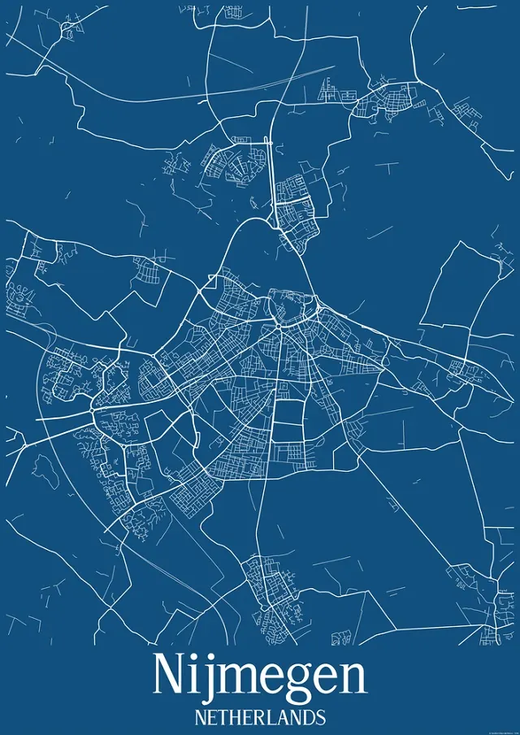
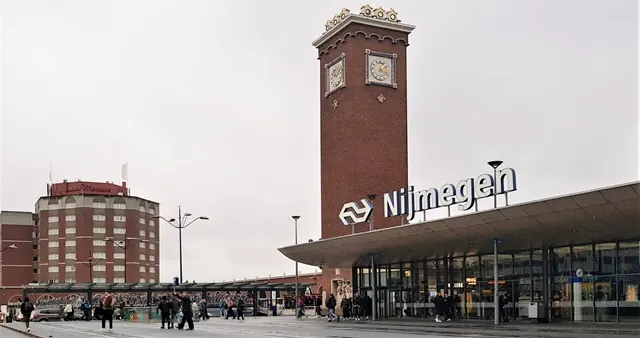
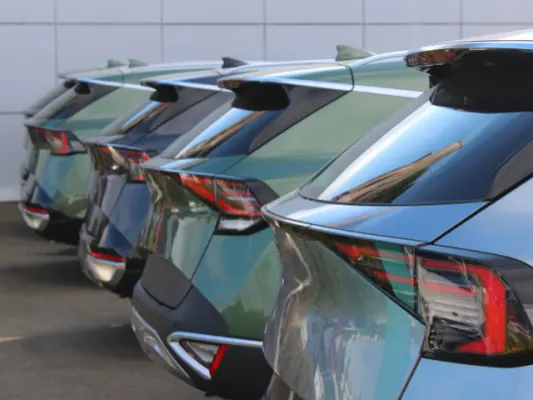
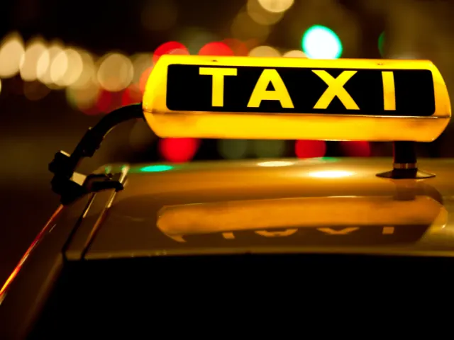
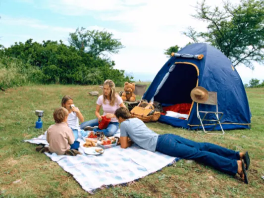
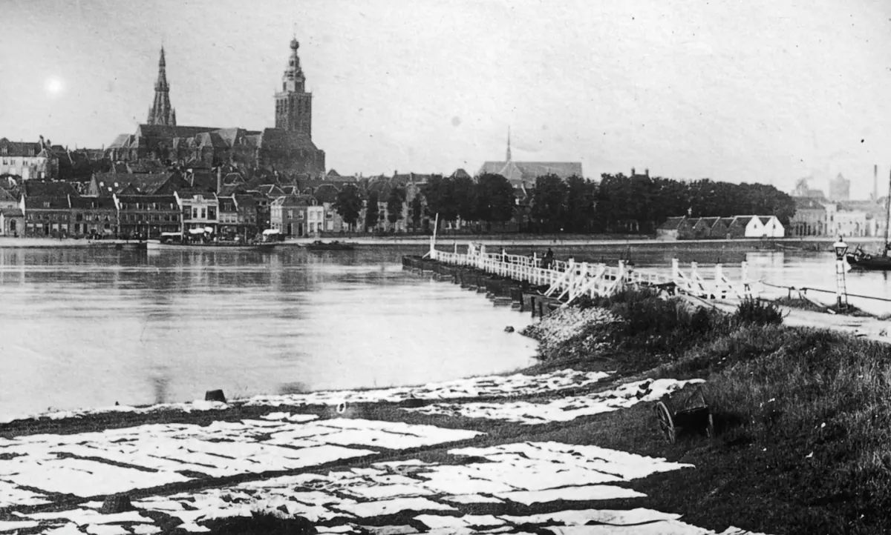

Plan je bezoek aan Nijmegen
Alles wat je vooraf wilt weten voor een dag of weekend in Nijmegen: hoe je er komt, waar je parkeert, wanneer de winkels open zijn en waar je overnacht.
Bereikbaarheid
Nijmegen heeft een groot station midden in de stad. Kom je met de auto, dan parkeer je in een van de parkeergarages rond de binnenstad.

Kaart van Nijmegen
Bezienswaardigheden, parken, musea, theaters, hotels, parkeergarages en het station op één kaart.
Lees meer
Station Nijmegen
Alles over station Nijmegen: welke treinen er stoppen, de verbouwing tot 2028 met nieuw perron en westentree, fietsenstallingen, parkeren en de…
Lees meer
Mobiliteit in Nijmegen
Deelfietsen, deelauto's en slim OV: zo maken flexibele vervoersoplossingen het leven in groeiend Nijmegen makkelijker.
Lees meer
Taxi in Nijmegen
Taxibedrijven in Nijmegen, voor een rit in de stad, naar Schiphol of Weeze, rolstoelvervoer en groepsvervoer.
Lees meer
Bereikbaarheid en wegafsluitingen
Actuele informatie over wegwerkzaamheden en omleidingen in het Rijk van Nijmegen.
Naar Visit NijmegenParkeren

Parkeren in Nijmegen
Parkeren in Nijmegen: alle parkeergarages in het centrum, tarieven op straat, de P+R en waar je gratis of goedkoop parkeert. Bijgewerkt voor 2026.
Lees meerParkeergarage Keizer Karel
Parkeergarage Keizer Karel ligt naast Nijmegen Centraal Station: 684 plaatsen, open vanaf 5.00 uur, maximaal € 16,- per dag. Adres, tijden en…
Lees meerParkeergarage Eiermarkt
Parkeergarage Eiermarkt ligt naast de Stevenskerk, vlak bij de Grote Markt. Adres, openingstijden, tarief (€ 3,90 per uur, 's avonds € 0,50) en…
Lees meerParkeergarage Mariënburg
Parkeergarage Mariënburg ligt midden in het centrum, bij LUX. Adres Arsenaalgas 8, openingstijden, tarief (€ 3,90 per uur, 's avonds € 0,50) en…
Lees meerParkeergarage Kelfkensbos
Parkeergarage Kelfkensbos bij Museum Het Valkhof: ingang Voerweg 2, 600 plaatsen. Openingstijden, tarief (€ 3,90 per uur, 's avonds € 0,50) en tips.
Lees meerOpeningstijden en markten
Openingstijden centrum Nijmegen
Ontdek het bruisende centrum van Nijmegen met zijn historische gebouwen, gezellige winkels en vele restaurants en cafés.
Lees meerMarkten in en om Nijmegen
Wist je dat er bijna elke dag wel een markt is in Nijmegen of omgeving? Op deze pagina staan alle markten op een rij
Lees meerOvernachten

Overnachten in Nijmegen
Een nachtje of weekend weg in Nijmegen? De leukste hotels, B&B's, Airbnb's, vakantieparken en campings in en rond de oudste stad van Nederland.
Lees meer
B&B in Nijmegen
Overnachten in een bed and breakfast in Nijmegen of omgeving? De leukste B&B's in Nijmegen-Oost, Groesbeek en Wijchen op een rij.
Lees meer
Campings in Nijmegen
Kamperen bij Nijmegen? De leukste campings en camperplaatsen in en rond de stad, plus een handige paklijst zodat je niets vergeet.
Lees meer
Zakelijk en met groepen
Vergaderen, een zaal huren, een bedrijfsuitje of met een groep naar Nijmegen.
Lees meerToeristische informatie en toegankelijkheid
Toeristische informatiepunten
Waar je in Nijmegen en de regio terecht kunt voor folders, kaarten, routes en souvenirs.
Naar Visit NijmegenParkeren met een gehandicaptenparkeerkaart
Waar je met een gehandicaptenparkeerkaart in Nijmegen mag parkeren en wat het kost.
Lees meer
Toegankelijk op pad
Tips voor bezoekers met een beperking: toegankelijke uitjes, accommodaties en voorzieningen in de regio.
Naar Visit NijmegenEenmaal in de stad

Zien en doen in Nijmegen
Bezienswaardigheden, musea, parken, uitjes met kinderen en de evenementen van het jaar.
Lees meer
Agenda Nijmegen
Alle evenementen in Nijmegen en omgeving: concerten, theater, markten, exposities en festivals.
Lees meer
Restaurants in Nijmegen
Uit eten in Nijmegen? De beste restaurants per keuken op een rij, van Italiaans en Thais tot vegan, high tea en uit eten met kinderen.
Lees meer